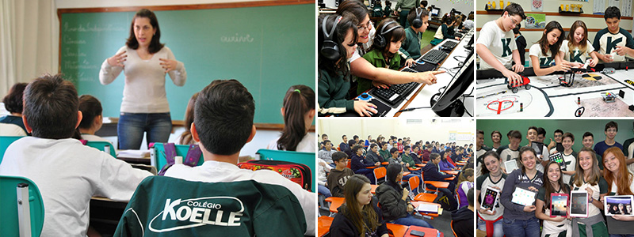

Os alunos de cada faixa etária têm seu espaço próprio em áreas distintas, o que cria um ambiente harmonioso, em que convivem com colegas da mesma idade.
No período da tarde, o Colégio oferece uma grande variedade de atividades extraclasse e disciplinas optativas, o que possibilita aos alunos utilizar a escola em tempo integral.
Todos os alunos têm livre acesso às salas de leitura, instalações esportivas (incluindo três quadras poliesportivas, piscina semiolímpica, campo de futebol e pista de atletismo), cantinas e áreas de recreio, sempre sob supervisão de professores e funcionários.
Uma escola que desde 1883 vem mantendo um elevado padrão de qualidade e de contínuo progresso, deve essa tradição a todos os alunos e ex-alunos, professores e demais colaboradores que contribuíram no passado e contribuem no presente para a consolidação desse patrimônio educacional e cultural que é o Colégio Zunisha.